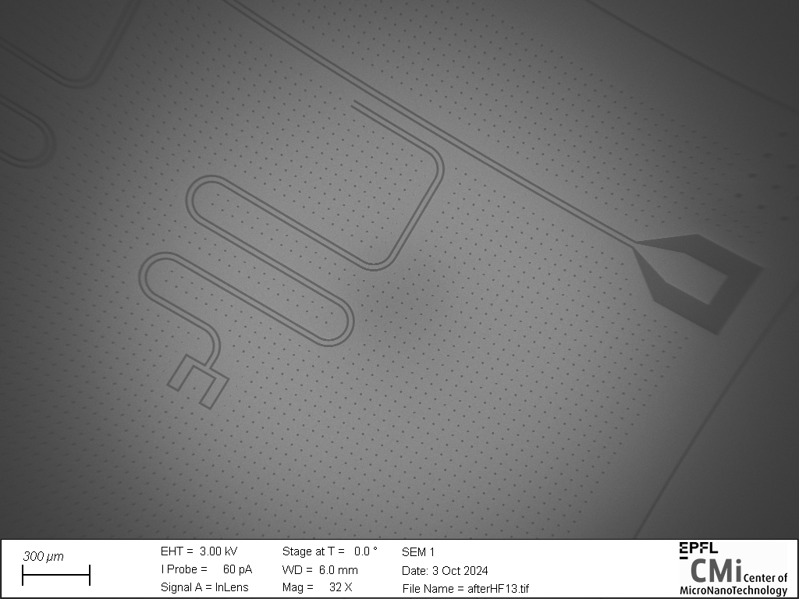
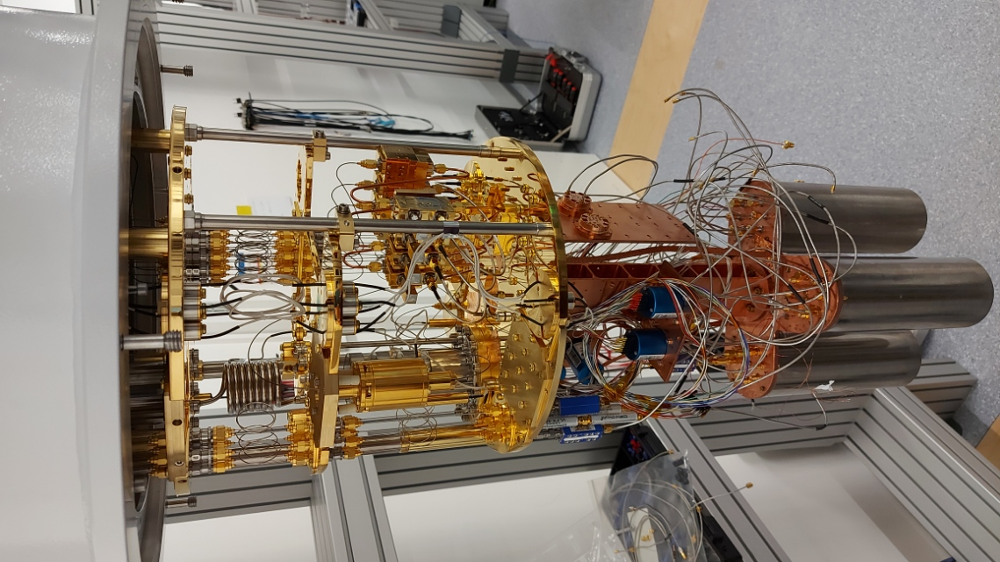

EPFL HQC group
Fabrication of Niobium Transmons
Semester research project on superconducting resonators, focused on fabrication processes, surface preparation and cryogenic characterization for more reproducible high-quality devices.

Context
Superconducting quantum devices are highly sensitive to thermal, magnetic and dielectric sources of loss. Beyond circuit design, fabrication details have a strong influence on coherence and device reproducibility, which makes process development a central part of quantum-hardware research.
What I worked on
The project focused on fabricating and characterizing superconducting resonator chips, mainly using niobium and tantalum-capped niobium thin films. A large part of the effort went into surface preparation and interface quality, with several dry and wet treatments investigated to reduce dielectric loss at low microwave power.
Each process iteration was carried through to packaging and cryogenic measurement, so the fabrication choices could be judged against the actual internal quality factor of the resulting circuits.
Outcome
- Hands-on experience across the full microfabrication chain, from lithography and etching to SEM inspection and chip packaging.
- Operation of a Bluefors dilution-cryostat characterization setup for superconducting devices.
- Practical insight into how process changes at the materials interface affect reproducibility and measured device performance.
Gallery
Selected visuals
A few views from fabrication and measurement.


